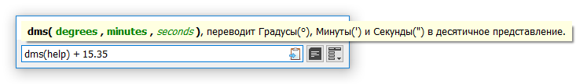
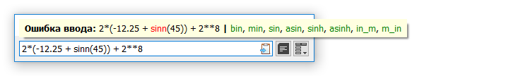

Функции являются наиболее мощным инструментом вычисления в SUM. В арсенале имеются более 120 функций, как встроенных из Python, так и пользовательских функций. Большую часть пользовательских функций занимают конвертеры, которые отличаются от остальных разделителем «_» (нижнее подчеркивание), например «in_mm», который указывает на конвертацию дюймов (inch) в миллиметры (смотр. Список функций).
Все функции состоят из имени, разделителя (скобок), и одного или более аргументов. Шаблон - имя( аргумент[ы] ). Любое допустимое1 выражение, включая функции, может быть вставлено как аргумент.
Аргумент может быть также дополнительным, то есть может быть пропущен. В Справке функции эти аргументы показаны курсивом (смотр. пример Справки функции ниже).

Справка функции (третий аргумент является дополнительным).

Сообщение ошибки ввода имени (со списком предложений).
Есть два вспомогательных инструмента для функций:
Справка: чтобы вызвать Справку функции, введите help вместо аргументов. Если Справка вызвана для более чем одной функции, то будет показана только самая первая слева.
Предложения: если в имени функции есть опечатка, программа попытается найти и показать наиболее подходящие функции среди существующих, после разделителя «|» (вертикальная черта).
1. Для определенных аргументов некоторых функций есть ограничения. В случае ошибки аргумента, также как и в случае других ошибок, пользователь всегда получает соответствующее сообщение.